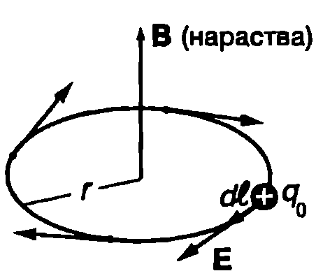
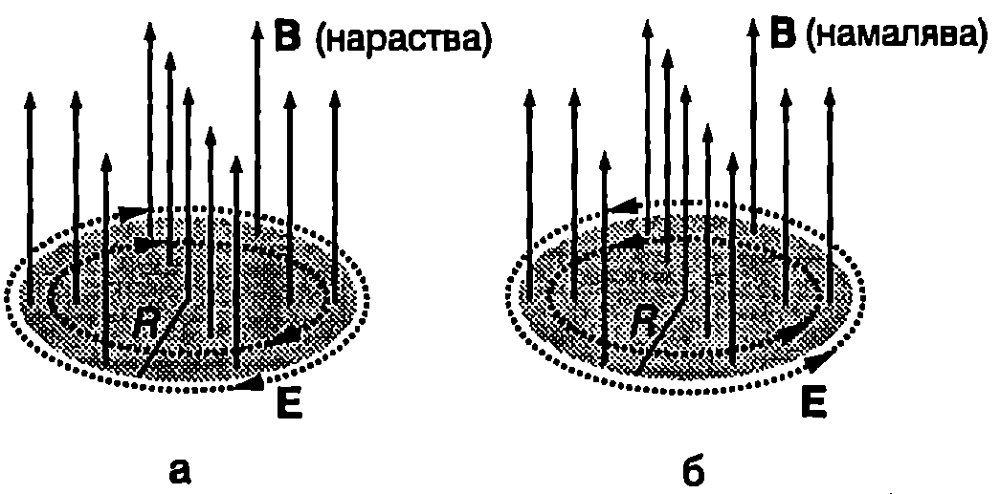

През 60-те години на XIX век британският физик Джеймс Кларк Максуел (1831-1879) обобщава откритите опитно закономерности за електричните и магнитните явления и създава единна теория на електромагнитното поле. Теорията на Максуел се изразява математически с четири уравнения, чиято роля в електродинамиката (науката, която изучава електричните и магнитните явления) е подобна на ролята на принципите на Нютон в класическата механика.
Вихрово електрично поле
Опитите на Фарадей доказват, че променливото магнитно поле индуцира ЕДН в проводников контур. Каква е физичната природа на електродвижещите сили, които привеждат в насочено движение свободните заряди и поддържат протичането на индуцирания ток? Опитът показва, че тези сили не зависят нито от веществото на проводника, нито от неговата температура и не са свързани със специфични промени в свойствата на проводника. Те се определят единствено от изменението на магнитното поле. Като анализира явлението електромагнитна индукция, Максуел прави извода, че електродвижещите сили по своята природа са електрични сили, т.е. че променливото магнитно поле създава електрично поле.
За да илюстрираме свойствата на това индуцирано електрично поле, ще разгледаме кръгов проводник с радиус , поставен перпендикулярно на индукционните линии на магнитно поле с цилиндрична симетрия (Фиг. \ref{fig:68.1}). Такова поле може да се създаде, например, между полюсите на електромагнит или в дълъг соленоид. Центърът на проводника лежи върху оста на симетрия. Магнитното поле се изменя с течение на времето и съгласно със закона на Фарадей в проводника се индуцира ЕДН. Токовите носители извършват насочено движение под действие на индуцираното електрично поле. От симетрията следва, че интензитетът на електричното поле е насочен по допирателната към кръговия контур. Да разгледаме пробен заряд който извършва елементарно преместване . Електричното поле действа на пробния заряд със сила , която е насочена по посока на преместването и извършва положителна работа . Работата на електричните сили за пренасяне на заряда до по затворения кръгов контур е

`Фиг. 68.1`
Следователно работата на силите на индуцираното електрично поле при пренасянето на пробния заряд по затворен контур е различна от нула, което показва, че тези сили (за разлика от електростатичните сили) не са консервативни, а полето не е потенциално.
От друга страна, работата за пренасяне на заряд по токовия контур може да се изрази чрез индуцираното ЕДН:
Приравняваме десните страни на уравнения \eqref{eq:68.1} и \eqref{eq:68.2} и получаваме
Уравнението показва, че индуцираното в кръговия проводник ЕДН е равно на работата на електричните сили за пренасяне на единица заряд по проводника. Този резултат остава в сила за проводников контур с произволна форма, поставен в променливо магнитно поле. Заместваме е от уравнение \eqref{eq:68.3} в закона на Фарадей за електромагнитната индукция и получаваме
В частния случай, когато проводников контур се намира в променливо магнитно поле, интегралът в лявата част на уравнение \eqref{eq:68.4} изразява индуцираното в проводника ЕДН. В общия случай обаче за пресмятането на този интеграл не е необходим проводник. Както вече беше отбелязано (вж. част, 1 стр. 137 и част 2, стр.19), той се нарича циркулация на полето. На закона на Фарадей се дава следната по-обща формулировка: Циркулацията на интензитета на индуцираното електрично поле по произволен затворен контур е равна на взетата с обратен знак скорост на изменение на магнитния поток през произволна площ, заградена от контура :
И така, същността на явлението електромагнитна индукция е в това, че всяко променливо магнитно поле поражда електрично поле. За разлика от електростатичното поле индуцираното електрично поле е Вихрово: циркулацията му е различна от нула. Неговите силови линии не започват от положителните заряди и не завършват в отрицателните заряди, както силовите линии на електростатичното поле, а са затворени криви, които обхващат променливия магнитен поток, създаващ електричното поле (Фиг. \ref{fig:68.2}). Ако във вихрово електрично поле се постави проводников контур, в него се индуцира ЕДН и протича ток. Индуцирането на ток обаче е само една от проявите на електромагнитната индукция. За възникването на вихрово електрично поле съвсем не е необходимо наличието на проводници.

Силовите линии на вихровото електрично поле са затворени криви. Те обхващат индукционните линии на променливото магнитно поле, което създава електричното поле. Посоката им може да се определи с помощта на правилото на Ленц. Мислено заменяме силовата линия с токов контур. В контура се индуцира ток, чието магнитно поле се противопоставя на изменението на външното поле (вж. Фиг. \ref{fig:66.5
``` на стр. 99). Посоката на силовата линия на вихровото електрично поле съвпада с посоката на индуцирания ток.}
`Фиг. 68.2`
> [!question] Пример 68.1
>
В цилиндрична област с радиус $R = 10~\mathrm{cm}$ е създадено еднородно магнитно поле. Индукционните линии на полето са успоредни на оста на цилиндъра (Фиг. \ref{fig:68.2}). Индукцията на полето се изменя с постоянна скорост ${dB}/{dt} = 0,\!5~\mathrm{T/s}$. Определете интензитета на вихровото електрично поле на разстояния $r = 5~\mathrm{cm}$ и $r = 15~\mathrm{cm}$ от оста на цилиндъра.
\end{psexample}
> [!note]- Решение
>
От симетрията следва, че силовите линии на вихровото електрично поле са концентрични окръжности, чиито центрове лежат на оста на цилиндъра (Фиг. \ref{fig:68.2}). Големината на интензитета е постоянна за всички точки от дадена силова линия. Циркулацията на вихровото електрично поле по затворен контур, съвпадащ със силова линия с радиус $r$, е
$$\oint_L \vec E \cdot d\vec l = E \cdot (2\pi r).$$
При $r < R$ магнитният поток през площта, ограничена от кръговия контур, е $\Phi_B = B \cdot (\pi r^2).$ Когато $r > R$, магнитният поток е $\Phi_B = B \cdot (\pi R^2).$ Заместваме циркулацията и магнитния поток в уравнение \eqref{eq:68.5}, изпускаме знака минус (който носи информация за посоката на вектора $\vec E$ според правилото на Ленц) и за големината на интензитета $E$ на вихровото електрично поле на разстояние $r < R$ получаваме
$$E \cdot (2\pi r) = \frac{d}{dt}(B \cdot \pi r^2) = \pi r^2 \cdot \frac{dB}{dt}; \quad E = \frac{r}{2} \cdot \frac{dB}{dt}.$$
Следователно, върху оста на цилиндъра интензитетът на вихровото електрично поле е $E = 0$ и нараства линейно с увеличаване на разстоянието $r$ до оста ($E \propto r$).
При $r = 0,\!05~\mathrm{m}$, $E = 12,\!5~\mathrm{mV/m}.$
За големината на $E$ извън цилиндъра получаваме
$$E \cdot (2\pi r) = \frac{d}{dt}(B \cdot \pi R^2) = \pi R^2 \cdot \frac{dB}{dt}; \quad E = \frac{R^2}{2r} \cdot \frac{dB}{dt}.$$
Извън цилиндъра интензитетът на вихровото електрично поле намалява обратно пропорционално на разстоянието $r$ до оста на цилиндъра ($E \propto \frac{1}{r}$).
При $r = 0,\!15~\mathrm{m}$: $E = 16,\!7~\mathrm{mV/m}.$
**Ток на отместване**
Като изхожда от схващането за симетрия в природата и нейните закони, Максуел изказва хипотезата, че трябва да съществува и обратното на електромагнитната индукция явление: *Всяко изменящо се с времето електрично поле създава магнитно поле.*
Ще илюстрираме това явление със следния пример: плосък кондензатор с кръгли електроди се зарежда от ток $I$. Записваме закона на Ампер за кръговия контур $L$ от Фиг. \ref{fig:68.3}a
$$
\oint_L \vec B \cdot d\vec l = \mu_0 I,
$$
където токът $I$ пробожда кръга $S_1$, заграден от окръжността $L$.
Ще припомним, че законът на Ампер налага едно единствено изискване за повърхността, токът през която определя циркулацията на магнитното поле тя трябва да е ограничена от избрания контур $L$. В случая можем да изберем тази повърхност така, че тя да не се пресича от тока $I$. Една такава възможност е показана на Фиг. \ref{fig:68.3}б, където повърхността $S_2$ има форма на цилиндър, едната основа на който е разположена между електродите на кондензатора, а другият край е отворен и съвпада с контура $L$. Ако сега приложим закона на Ампер за същия контур $L$, но използваме повърхността $S_2$, ще получим, че циркулацията на вектора на магнитната индукция $\vec B$ е нула, а не $\mu_0 I$, защото повърхността $S_2$ не се пресича от тока $I$. От друга страна обаче, повърхността $S$, се пресича от силовите линии на променливото електрично поле, което се създава вътре в кондензатора.
Максуел предполага, че така както съществуват два източника на електрични полета електрични заряди и променливи магнитни полета, магнитните полета също имат два вида източници: токове и променливи електрични полета. Той обобщава закона на Ампер, като добавя в дясната страна на уравнение \eqref{eq:68.6} още един член $I_\text{от}$, наречен ток на отместване, който отразява приноса на променливото електрично поле:
$$
\oint_L \vec B \cdot d\vec l = \mu_0 (I+I_\text{от}),
$$

`Фиг. 68.3`
Ще отбележим, че терминът ``ток на отместване'' произтича от теорията на ефира невидима субстанция, за която се е смятало, че запълва цялото световно пространство. Макар и напълно отхвърлена от съвременната физика като несъстоятелна, тази теория изиграва положителна роля за развитието на науката през XIX век. Отделни термини от нея са се запазили и до днес, но в тях се влага съдържание, което няма нищо общо с хипотетичния ефир. (Например радиокоментаторът съобщава, че програмата се излъчва в ефира.) Затова, когато говорим за ток на отместване, трябва да помним, че не става дума за действителен ток, а за променливо електрично поле, което, подобно на
реалните токове, създава магнитно поле. В случая (Фиг. \ref{fig:68.3}) бихме могли условно да кажем, че токът на проводимост $I$, който тече по съединителните проводници, се продължава от тока на отместване $I_\text{от}$ вътре в кондензатора. Условието за непрекъснатост на пълния ток $I_\text{п} = I + I_\text{от}$ изисква двата тока да са равни: $I_\text{от} = I$.
Ще установим връзката между големината на интензитета $E$ на електричното поле вътре в кондензатора и тока $I$, който го зарежда. За плосък въздушен кондензатор (вж. пример 48.2 на стр.28)
$$E = \frac{\sigma}{\varepsilon_0} = \frac{q}{\varepsilon_0 S}$$
където $\sigma = q/S$ е повърхнинната плътност на заряда върху електродите, $q$ е зарядът на кондензатора, а $S$ е площта на всеки един от електродите. Токът, който зарежда кондензатора, е
$$I = \frac{dq}{dt} = \varepsilon_0 S \frac{dE}{dt} = \varepsilon_0 \frac{d\Phi_E}{dt},$$
където $\Phi_E = SE$ е потокът на интензитета $E$ на еднородното електрично поле (електричен поток) през напречното сечение $S$ на кондензатора. Тъй като извън кондензатора електричното поле е нула, същата стойност има и потокът на електричното поле през повърхността $S_2$ (Фиг. \ref{fig:68.3}б). Следователно
$$
I_\text{от} = I = \varepsilon_0 \frac{d\Phi_E}{dt}.
$$
Полученият резултат може да се обобщи за ток на отместване през произволна повърхност: токът на отместване през дадена повърхност във вакуум е равен на скоростта, с която се изменя с течение на времето електричният поток през тази повърхност, умножена по електричната константа $\varepsilon_0$
Заместваме тока на отместване $I_\text{от}$ от уравнение \eqref{eq:68.8} в \eqref{eq:68.7} и получаваме уравнението на *обобщения закон на Ампер*
$$
\oint_L \vec B\cdot d\vec l = \mu_0\left(I + \mathcal E_0 \frac{d\Phi_E}{dt}\right),
$$
който отразява хипотезата на Максуел, че освен токовете, източници на магнитни полета са и променливите електрични полета.
> [!question] Пример 68.2
>
Плосък кондензатор с кръгли електроди с радиус $R$ се зарежда от ток $I$ (Фиг. \ref{fig:68.3}).
а) Определете индукцията на магнитното поле $\vec B$ в кондензатора като функция на разстоянието от оста на симетрия.
б) Пресметнете максималната стойност на $B$, ако $I = 1~\mathrm{A}$, $R = 0,\!1~\mathrm{m}$.
\end{psexample}
> [!note]- Решение
>
Електричното поле вътре в кондензатора е еднородно. Като отчетем симетрията и използваме аналогията между реалния ток и тока на отместване, стигаме до извода, че магнитното поле в кондензатора е подобно на магнитното поле в еднороден цилиндър, по който тече ток с постоянна плътност. Магнитните индукционни линии са концентрични окръжности, перпендикулярни на вектора на интензитета $\vec E$, чиито центрове лежат върху оста на симетрия $O$ (Фиг. \ref{fig:68.4}а).
Определяме циркулацията на магнитното поле по окръжност с радиус $r$, съвпадаща с магнитна индукционна линия (Фиг. \ref{fig:68.4}а):
$$\oint_L \vec B \cdot d\vec l = B \cdot (2\pi r).$$
Скоростта на изменение на електричния поток през кръга с радиус $r < R$ е

`Фиг. 68.4`
$$\frac{d}{dt} \Phi_E = \pi r^2 \frac{dE}{dt} = \pi r^2 \cdot \frac{I}{\varepsilon_0 \pi R^2},$$
където сме отчели, че $E = \frac{\sigma}{\varepsilon_0}$ и $I = \frac{dq}{dt}$.
Заместваме циркулацията на магнитното поле и скоростта на изменение на електричния поток в уравнение \eqref{eq:68.9} и като отчетем, че токът, който зарежда кондензатора, не пресича кръга с радиус $r$, получаваме:
$$B = \frac{\mu_0 I}{2\pi R^2} \cdot r \quad (\text{при } r < R).$$
При $r > R$:
$$\frac{d}{dt} \Phi_E = \pi R^2 \frac{dE}{dt} = \frac{I}{\varepsilon_0},$$
$$B = \frac{\mu_0 I}{2\pi r} \quad (\text{при } r > R).$$
Следователно, вътре в кондензатора индукцията на магнитното поле $B$ нараства при отдалечаване от оста на симетрия, достига максималната си стойност при $r = R$, след което намалява при $r > R$ (Фиг. \ref{fig:68.4}б).
б)
$$B_{\text{max}} = \frac{\mu_0 I}{2\pi R} = 2 \times 10^{-6}~\mathrm{T}.$$
Ще отбележим, че индуцираното магнитно поле е слабо. Освен това, само за много кратко време може да се поддържа такъв ток. Например, когато през кондензатора тече променлив ток с амплитуда $1~\mathrm{A}$, получената стойност $B_{\text{max}}$ е равна на амплитудата на магнитното поле в кондензатора, което се изменя по същия закон, както токът. Променливо магнитно поле с такава малка амплитуда е трудно да бъде регистрирано. Ако в кондензатора се постави магнитна стрелка, поради нейната инертност и неизбежните сили на триене, тя няма да се отклонява.
**Уравнения на Максуел**
За вакуум уравненията на Максуел са:
$$
\oint_S \vec E \cdot d\vec S = \frac{q}{\varepsilon_0};
$$
$$
\oint_S \vec B \cdot d\vec S = 0;
$$
$$
\oint_L \vec E \cdot d\vec l = -\frac{d\Phi_B}{dt};
$$
$$
\oint_L \vec B \cdot d\vec l = \mu_0 \left(I+\varepsilon_0 \frac{d\Phi_E}{dt}\right).
$$
Уравнение \eqref{eq:68.10} е обобщение на закона на Гаус от електростатиката:
*Потокът на интензитета на електричното поле през произволна затворена повърхност $S$ е равен на отношението на заряд $q$, намиращ се в обема, заграден от повърхността $S$, и електричната константа $\varepsilon_0$.*
Вихровите електрични полета не дават принос в потока на интензитета, защото техните силови линии са затворени криви те или не пресичат повърхността $S$, или я пресичат два пъти: веднъж от опаката към лицевата страна и след това в обратната посока.
Уравнение \eqref{eq:68.11} изразява закона на Гаус за магнитното поле:
*Потокът на магнитната индукция през произволна затворена повърхност $S$ е равен на нула.*
Този резултат е следствие от факта, че не съществуват магнитни заряди. Всички магнитни полета са вихрови. Ако имаше магнитни заряди, щяха да съществуват магнитни полета, чиито индукционни линии започват от положителните магнитни заряди и завършват в отрицателните магнитни заряди. Тогава уравнение \eqref{eq:68.11} би имало аналогичен вид на уравнение \eqref{eq:68.10}, само че вместо електричния заряд в дясната му страна щеше да влиза магнитният заряд.
Уравнение \eqref{eq:68.12} описва математически явлението електромагнитна индукция:
*Циркулацията на електричното поле по произволен затворен контур е равна на взетата със знак минус скорост на изменение на магнитния поток през произволна повърхност, ограничена от контура $L$.*
Това уравнение изразява връзката между вихровото електрично поле и неговия източник изменящо се с течение на времето магнитно поле.
Последното уравнение изразява обобщения закон на Ампер:
*Циркулацията на магнитното поле по произволен затворен контур $L$ е равна на сумата от тока на проводимост $I$ и тока на отместване $\displaystyle I_\text{от* = \varepsilon_0 \frac{d\Phi_E}{dt}$, умножена по магнитната константа $\mu_0$.}
То дава връзката между магнитното поле и неговите източници токовете и променливите електрични полета.
Електромагнитно поле
Електричното поле и магнитното поле съществуват самостоятелно само ако не се изменят с течение на времето. Променливите полета са взаимно свързани: променливото магнитно поле поражда променливо електрично поле, което от своя страна създава променливо магнитно поле и т.н. Следователно в цялото пространство, в което става изменение на полетата, едноврененно съществуват както електрични полета, така и магнитни полета, които взаимно се поддържат. Тези полета са неразривни части от единно цяло, наречено електромагнитно поле. Всяка точка от електромагнитното поле се характеризира с векторните величини интензитет $\vec E$ и магнитна индукция $\vec B$. Електромагнитното поле е материален обект, който притежава енергия. Електромагнитната енергия е разпределена в цялото пространство, в което се простира полето. Тя е сума от електричната и от магнитната му енергия. Когато полетата се променят с времето, става преобразуване на електрична енергия в магнитна енергия и обратно.
Уравненията на Максуел не само правилно описват всички известни по времето на Максуел електрични и магнитни явления, но и с тяхна помощ Максуел предсказва съществуването на принципно нови, неизвестни по онова време явления. Непосредствено следствие от уравненията на Максуел е съществуването на електромагнитни вълни, които се разпространяват във вакуум със скоростта на светлината $c = 3.10^8$ m/s. Освен това Максуел доказва, че светлината също е електромагнитна вълна. Както ще видим по-нататък, всички следствия от теорията на Максуел получават блестящо експериментално потвърждение.